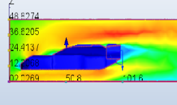
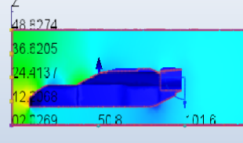
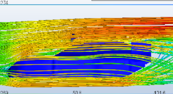

Compressed-Air Powered Car
Real-time robot navigation system using sensor fusion and computer vision.

Real-time robot navigation system using sensor fusion and computer vision.
This project focused on the integration of homemade biofuel fuel with a road-vehicle optimized for drag reduction. My work on the project centered around vehicle design, construction, and testing. I CADed three vehicle models, analyzed their aerodynamic performance in Autodesk CFD, and constructed the model I deemed most aerodynamically efficient.
For all three vehicles, I constructed their CAD models based on images I found of the three vehicles online. The CFD simulations were all run with an air velocity of 40 mph at the inlet, a pressure of 0 pascals at the outlet, airflow under no-slip conditions, incompressible and turbulent flow, and automatic meshing.
Most basic navigation systems fail under real-world conditions due to:
The goal was to design a system that remains stable under noisy, real-time conditions.




Autodesk computed the Armma Vendetta RC Car to generate approximately 23 newtons of drag and 23 newtons of downforce in the given conditions, making it the second-best performning vehicle of the three. Potential causes for the drag (aside from the underbody diffuser) were qualitatively determined to be slight adverse pressure gradient at the front of the car and the flow separation at the back.

Raw LiDAR data was filtered using a moving average filter to reduce noise.
OpenCV was used for obstacle detection from camera frames.
A simple reactive controller was implemented to adjust robot direction based on obstacle proximity.
The biggest improvement came from simplifying the pipeline rather than adding complexity. Early versions overcomplicated sensor fusion, which increased latency instead of improving accuracy.